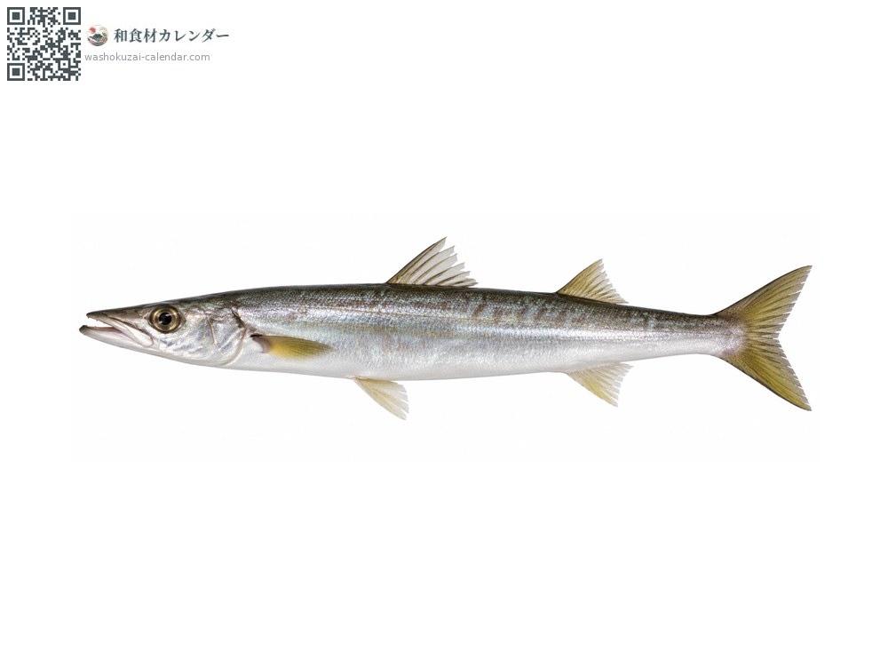
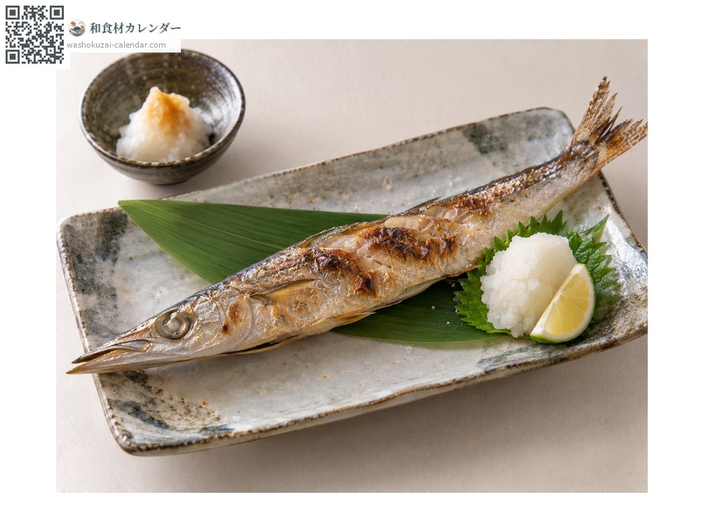
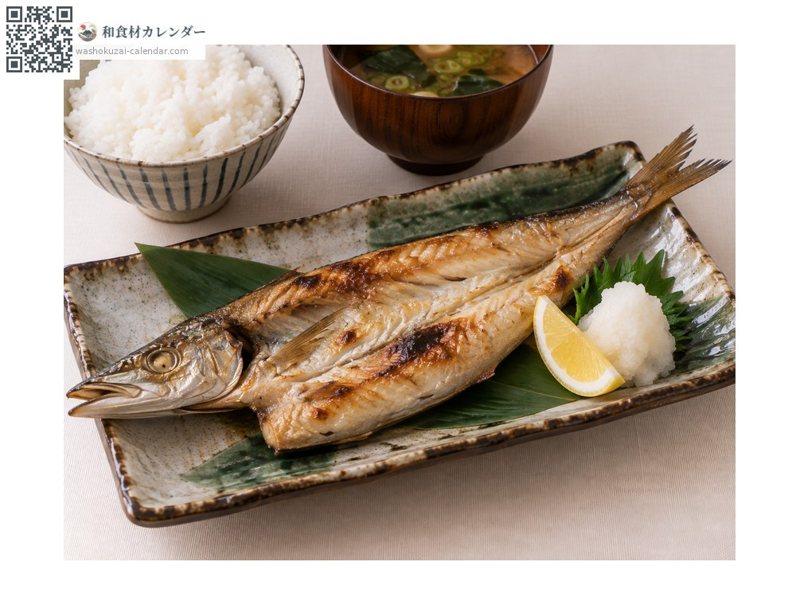
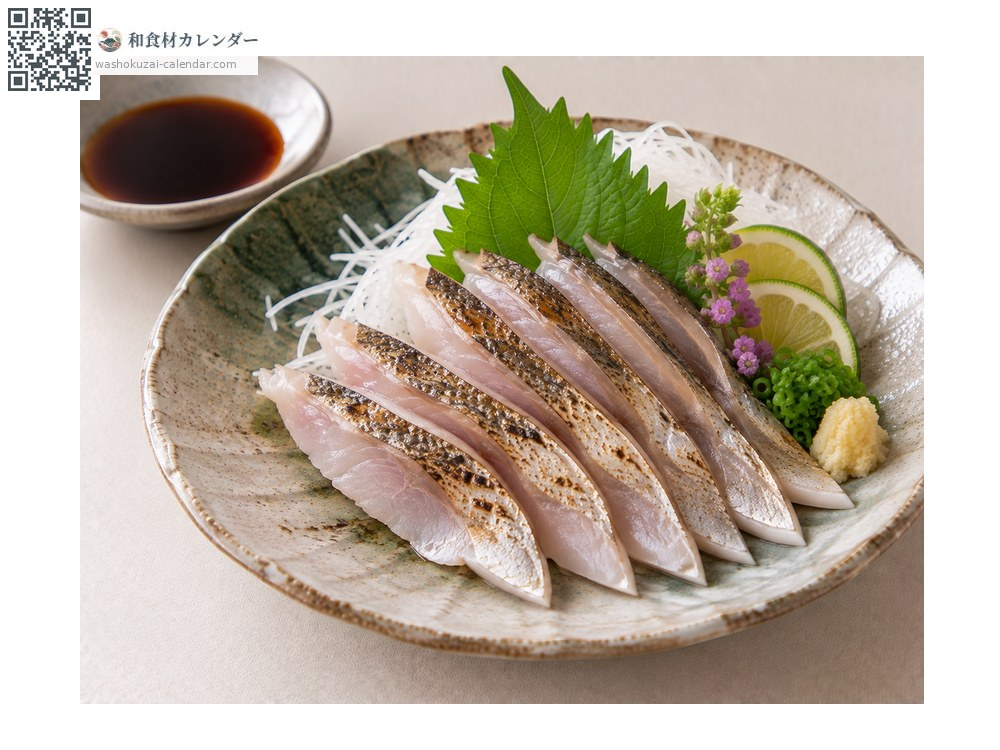
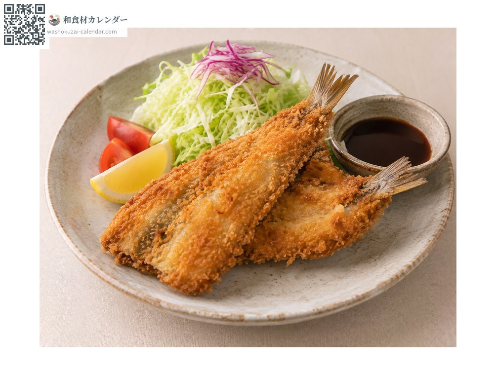

魚介
カマス
かます
別名・別表記魳、梭子魚、kamasu
旬は9月・10月・11月

旬の時期
1月
2月
3月
4月
5月
6月
7月
8月
9月
10月
11月
12月
旬出回り
調理法

塩焼き
水分が多いので強めの塩で。

干物
一夜干しにすると旨みが凝縮する。

刺身
鮮度が良ければ。皮を炙って。

フライ
淡白な身が揚げ物に合う。
選び方
体が銀色に光り、口先が尖ってしっかりしているもの。体に張りがあるもの。
保存方法
水分が多く傷みやすい。塩をして冷蔵、または干物に。
主な産地
豆知識
「カマスの焼き食い一升飯」という言い回しがあるほど、焼くと飯が進むとされる。